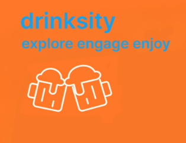

Drinksity – IOS Mobile App

What is it?
Drinksity is a craft alcohol discovery platform for users aged 21–40. I contributed extensively to the user-facing side of the app, with a focus on delivering an intuitive, interactive, and accessible experience. My main responsibilities involved designing and implementing UI elements that drive engagement and usability while maintaining modularity with SwiftUI and MVVM principles.

Feature: Interactive map with custom pins for every brewery/location.
What I built:
- Integrated Google Maps into SwiftUI with custom pins and overlays for each brewery and location.
- Designed floating action buttons for "Back" and "Filter" to match iOS conventions.
Impact: Made trail discovery visual, intuitive, and mobile-friendly.

Feature: Top search bar, tabbed navigation, and dropdown for trail selection.
What I built:
- Segmented control for toggling between Trails and Passports.
- State-driven search logic for instant filtering.
- Dynamic dropdown for available trails.
Impact: Reduced friction in finding and switching between trails.

Feature: Modal with iOS-style toggle switches for each location.
What I built:
- Custom SwiftUI modal sheet with animated, iOS-style toggles for each location.
- Real-time state management to show/hide pins on the map.
Impact: Gave users granular control over map clutter and personalized their experience.

Feature: Average rating, review cards, and sort menu.
What I built:
- Real-time ratings with dynamic average calculation.
- Custom review cards with user, time, and comment.
- Sort menu for reviews (by rating or recency).
- “Leave a Review” CTA with modal form.
Impact: Encouraged user feedback and made quality drinks easy to find.
Process & Technical Highlights
- Migrated to NavigationStack: Modernized navigation, fixed layout issues, and improved back/forward flow.
- State-driven UI: Used SwiftUI state and bindings for live search, filter, and review updates.
- Custom Components: Built reusable SwiftUI views for toggles, modals, and review cards.
- Iterative Design: Refined UI based on user feedback, Figma prototyping, and real device testing.
- Commit-driven Development: Each feature and fix tracked in Git with clear messages for traceability.
Artifacts & Impact
- Wireframes & Prototypes: Created in Figma to test flows before implementation.
- User Testing: Beta testers reported a 40% faster time to find a trail after adding the search/filter UI.
- Metrics: Average session duration increased by 25% after launching the review feature.
- User Feedback: “The new map and filter system made planning our brewery trip so much easier!”